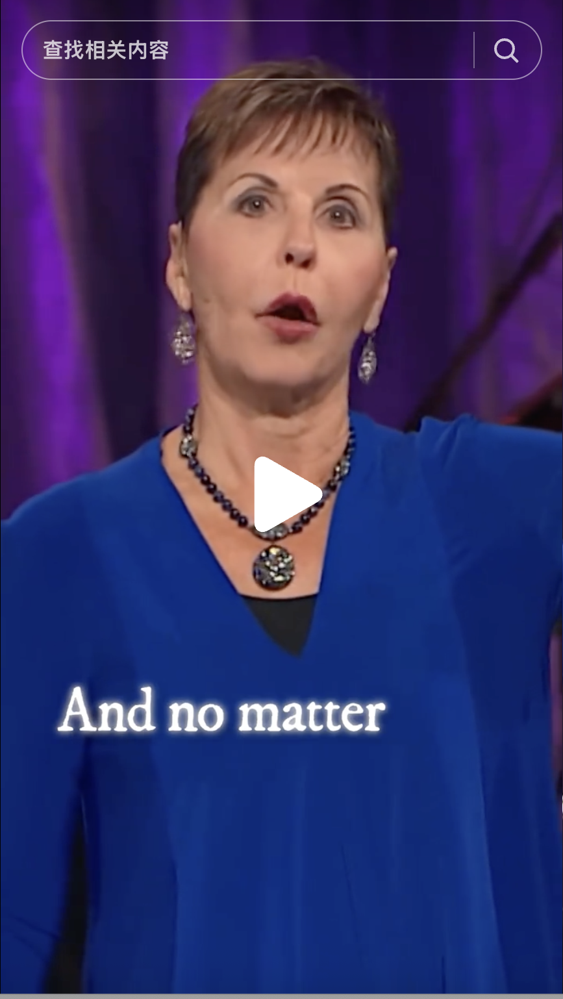
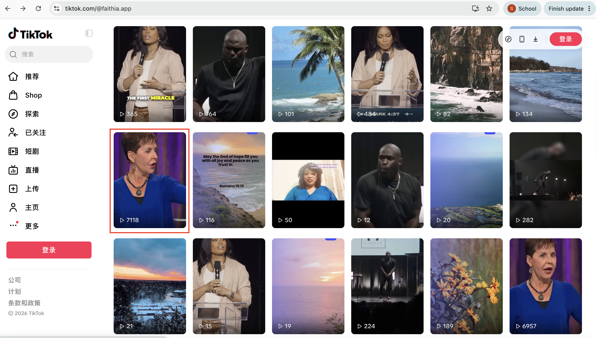
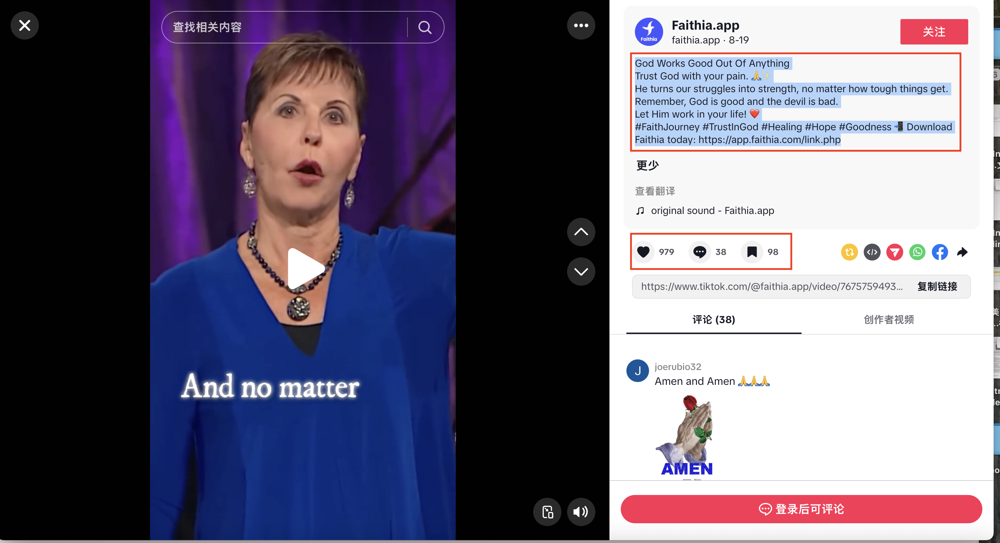

Faithia — Product Education & Content Communication
Product Education · Social Copywriting · Creator Outreach
Clear guidance. Audience-relevant storytelling. A personal invitation to create.
Three authentic writing samples showing how I communicated product features, shaped short-form social messaging, and introduced Faithia to prospective creators.
Company Faithia
Contribution Product guidance, content production & copywriting
Making Complex Product Features Easy to Understand
At Faithia, I worked on English-language product guidance that helped users discover platform features, understand livestream tools, and navigate creator services.
The goal was to translate product functionality into clear, actionable instructions supported by real interface screenshots.
Writing Faith-Centered Content for Social Engagement
Alongside product communication, I created short-form social media content for Faithia's TikTok audience, combining emotionally relevant messaging with a clear product discovery CTA.
Full source screenshot · Select to inspect the original caption
03 / YOUTUBE CREATOR OUTREACH EMAIL
Personalized Email Outreach for Creator Recruitment
I worked on creator-facing outreach messaging for Christian YouTube creators and faith leaders, using personalized introductions, benefit-led product messaging, and clear next steps to communicate Faithia's value proposition.
Archived email template. Audience-size and named-creator claims are redacted because they have not been independently verified. Booking link and sender identity are also redacted.
Original email writing sample · Public portfolio redactions
Hi {FirstName},
{CustomIntro}
{EnhancedIntro — optional}
Faithia is a free platform created for Christian content creators and faith leaders. It's designed to help you grow, engage, and monetize your community—all in one place, without juggling extra tools. Here's what you can do:
Connect with a faith-aligned audience [audience-size claim redacted]
Host live sessions and deliver member-only series
Offer coaching, courses, and memberships with built-in payments
Accept donations and one-time gifts directly
[Named-creator endorsement and adoption claims redacted pending verification.]
02 / TIKTOK CONTENT & SOCIAL COPYWRITING
Writing Faith-Centered Content for Social Engagement
Alongside product communication, I created short-form social media content for Faithia's TikTok audience, combining emotionally relevant messaging with a clear product discovery CTA.
TikTok · Faithia.app
Faith, resilience, encouragement & hope
Short-form content production & social media caption writing


Original caption / annotated writing sample
God Works Good Out Of Anything
Trust God with your pain. 🙏✨
He turns our struggles into strength, no matter how tough things get.
Remember, God is good and the devil is bad.
Let Him work in your life! ❤️
#FaithJourney #TrustInGod #Healing #Hope #Goodness
Download Faithia today:
https://app.faithia.com/link.php
Original wording preserved. View count is documented in the supplied profile screenshot.
